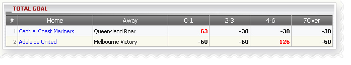

Total Goal
Definition:
Show agent’s win/loss based on position taking for tickets which have bet type: Total Goal. This report is separated by each match

Total Goal
- In this figure above:
- 1st bet: member placed a bet 100 on match Central Coast Mariners -vs- Queensland Roar, odds = 3.1, agent PT = 30%, member choice: 0-1 as final score. From these info, we can calculate agent win/loss as below
If Score: 0-1 --> agent will lose = (odds -1) * stake * agent PT = (3.1-1)*100*30% = 63
If Score: 2-3, 4-6, 7 over --> agent will win = -stake * agent PT = -100*0.3 = -30
- 2nd bet: member placed a bet 200 on match Adelaide United -vs- Melbourne Victory, odds = 3.1, agent PT = 30%, member choice: 4-6 as final score. From these info, we can calculate agent win/loss as below
If Score: 4-6 --> agent will lose = (odds -1) * stake * agent PT = (3.1-1)*200*30% = 126
If Score: 0-1, 2-3, 7 over --> agent will win = -stake * agent PT = -200*0.3 = -60